无障碍功能
Visual Studio Code 具有许多功能，可帮助使编辑器对所有用户均无障碍使用。缩放级别和高对比度颜色提高了编辑器的可见性，纯键盘导航支持无需鼠标即可使用，并且编辑器已针对屏幕阅读器进行了优化。
缩放
你可以在 VS Code 中使用 视图 > 外观 > 缩放 命令来调整缩放级别。每个 缩放 命令会将缩放级别增加或减少 20%。
- 视图 > 外观 > 放大 (
kb(workbench.action.zoomIn)) - 增加缩放级别。 - 视图 > 外观 > 缩小 (
kb(workbench.action.zoomOut)) - 减小缩放级别。 - 视图 > 外观 > 重置缩放 (
kb(workbench.action.zoomReset)) - 将缩放级别重置为 0。
>注意：如果你正在使用放大镜，请在查看悬停信息时按住 kbstyle(Alt) 键以将光标移动到悬停信息上。
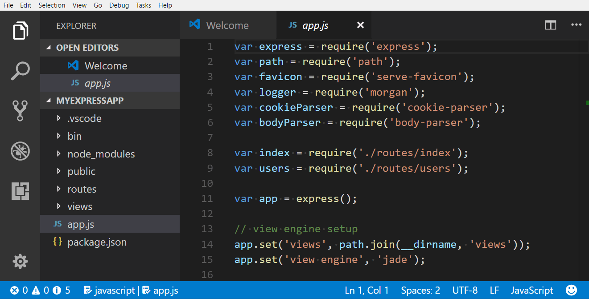
持久化缩放级别
当你使用 视图 > 外观 > 放大/缩小 命令调整缩放级别时，缩放级别会持久保存在 setting(window.zoomLevel) 设置中。默认值为 0。每增加或减少 1 表示放大或缩小 20%。你也可以输入小数来以更精细的粒度调整缩放级别。
无障碍帮助
打开无障碍帮助 命令 kb(editor.action.accessibilityHelp) 会根据当前上下文打开一个帮助菜单。它目前适用于编辑器、终端、笔记本、聊天视图和内联聊天功能。
你可以在帮助菜单中关闭无障碍帮助菜单或打开更多文档。
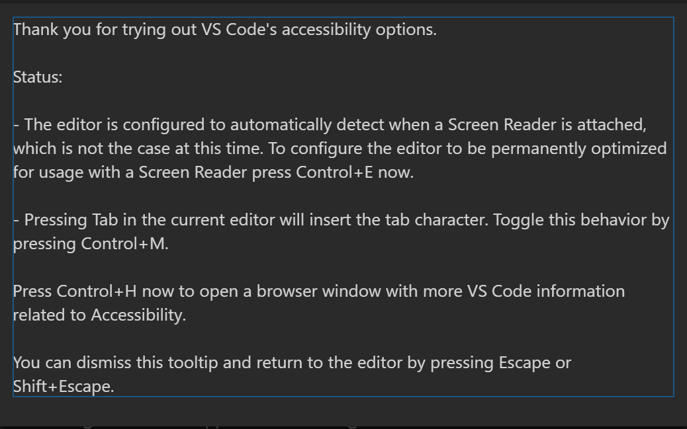
高对比度主题
VS Code 在所有平台上都支持高对比度颜色主题。使用 文件 > 首选项 > 主题 > 颜色主题 (kb(workbench.action.selectTheme)) 来显示 选择颜色主题 下拉菜单，并选择 高对比度 主题。
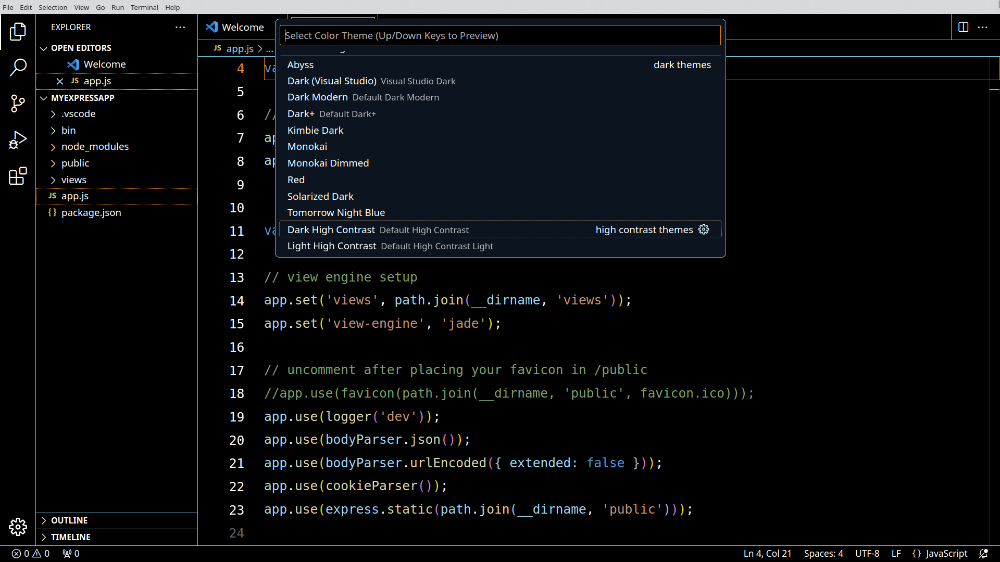
色觉无障碍
你可以在 Visual Studio Marketplace 中搜索与色觉缺陷兼容的扩展。使用扩展视图 kb(workbench.view.extensions) 并搜索"color blind"来显示相关选项。
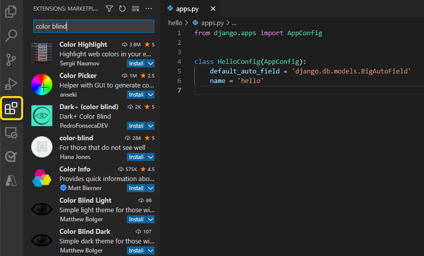
从 Marketplace 安装了颜色主题后，你可以通过 文件 > 首选项 > 主题 > 颜色主题 kb(workbench.action.selectTheme) 来更改颜色主题。
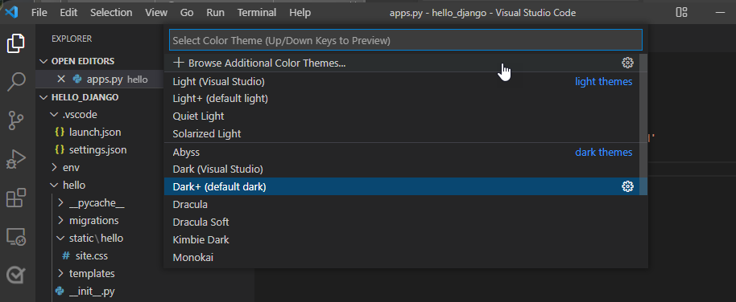
推荐的色觉无障碍主题
- GitHub - 对大多数形式的色盲均无障碍，并与 GitHub 设置中的主题相匹配。
- Gotthard - 针对大约 20 种编程语言进行了优化。
- Blinds - 为绿色盲患者创建，具有高对比度颜色比率。
- Greative - 同时考虑了色盲和光敏感。
- Pitaya Smoothie - 对大多数形式的色盲均无障碍，并符合 WCAG 2.1 颜色对比度标准。
自定义警告颜色
VS Code 的默认颜色主题是 Dark+。不过，你可以自定义用户界面中的主题和属性颜色。
>注意：有关覆盖当前主题中颜色的更多信息，请访问自定义颜色主题。
要自定义错误和警告波浪线，请转到 文件 > 首选项 > 设置 以获取用户设置。搜索"color customizations"以找到 工作台: 颜色自定义 设置，然后选择 在 settings.json 中编辑 来打开你的用户 settings.json 文件。
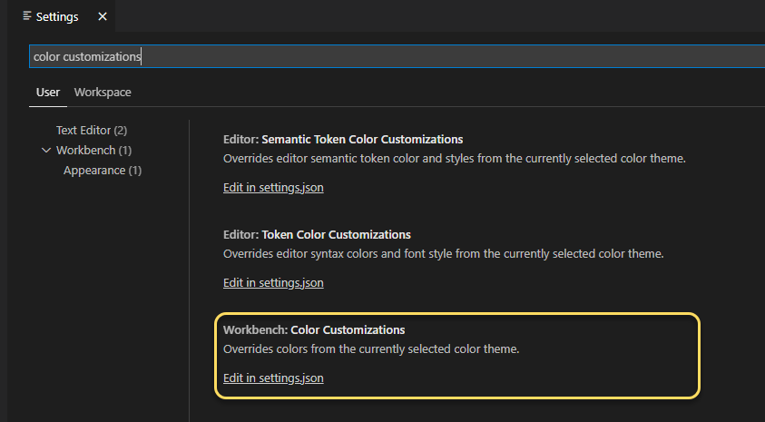
在你的 settings.json 文件中，将以下代码嵌套在最外层的大括号内。你可以通过输入十六进制代码为每个对象分配颜色。
"workbench.colorCustomizations": {
"editorError.foreground": "#ffef0f",
"editorWarning.foreground": "#3777ff"
}在以下示例中，当 JSON 项后缺少逗号时，会应用警告颜色。
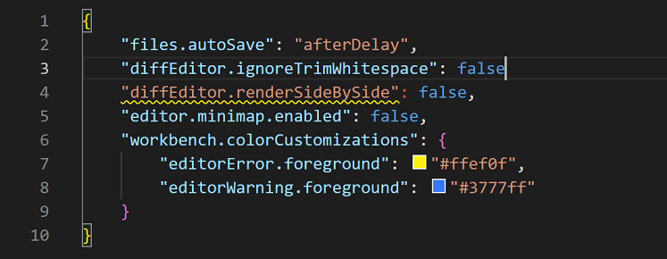
editorError.foreground- 覆盖错误下方的波浪线。editorWarning.foreground- 覆盖警告下方的波浪线。editorError.background- 覆盖错误的突出显示颜色。editorWarning.background- 覆盖警告的突出显示颜色。
为 editorError 和 editorWarning 的背景分配颜色也有助于识别潜在问题。你选择的颜色将突出显示相应的错误或警告。上例中显示的颜色 #ffef0f（黄色）和 #37777ff（蓝色）对常见形式的色觉缺陷患者更易区分。
选择无障碍颜色
颜色的无障碍性取决于异常三色视觉（色盲）的类型。严重程度因人而异，可分为四种状况类型：
| 状况 | 类型 | ||
|---|---|---|---|
| --- | --- | ||
| 绿色盲（Deuteranopia） | 对绿色光敏感度降低。是最常见的色盲形式。 | ||
| 红色盲（Protanopia） | 对红色光敏感度降低。 | ||
| 蓝色盲（Tritanopia） | 对蓝色光敏感度降低。这种状况较为罕见。 | ||
| 全色盲（Monochromia） | 无法看到所有颜色，也称为色觉缺失症。有关最罕见色盲形式的更多信息：抗盲基金会。 |
为特定状况选择最佳颜色的最佳方法之一是应用互补色。这些是在色轮上彼此相对的颜色。
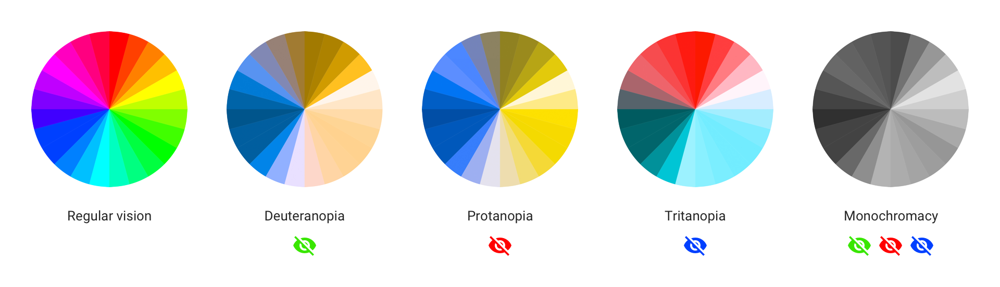
>注意：有关查找互补色的更多信息，请访问 Adobe Color 上的色盲模拟器和交互式色轮。
调暗未聚焦的编辑器和终端
可以调暗未聚焦的视图，以便更清楚地了解输入将发送到哪里。在使用多个编辑器组或终端时，这尤其有用。通过设置 "accessibility.dimUnfocused.enabled": true 来启用此功能。你可以使用 setting(accessibility.dimUnfocused.opacity) 控制调暗程度，该值取不透明度分数，范围从 0.2 到 1（默认值 0.75）。
键盘导航
VS Code 在 命令面板 (kb(workbench.action.showCommands)) 中提供了详尽的命令列表，以便你可以无需鼠标即可使用 VS Code。按 kb(workbench.action.showCommands)，然后输入命令名称（例如"git"）来筛选命令列表。
VS Code 还有许多预设的键盘快捷键用于命令。
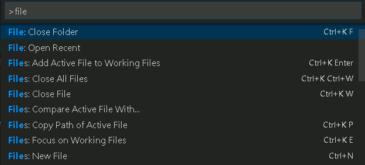
你还可以设置自己的键盘快捷键。文件 > 首选项 > 键盘快捷方式 (kb(workbench.action.openGlobalKeybindings)) 打开键盘快捷方式编辑器，在其中你可以发现和修改 VS Code 操作的键盘快捷键。有关自定义或添加自己键盘快捷键的更多详细信息，请参阅键绑定。
要在工作台中快速导航，我们建议使用 聚焦下一个部分 (kb(workbench.action.focusNextPart)) 和 聚焦上一个部分 (kb(workbench.action.focusPreviousPart)) 命令。
锚点选择
为了更方便地使用键盘开始和结束选择，提供了四个命令：设置选择锚点 (kb(editor.action.setSelectionAnchor))、从锚点选择到光标 (kb(editor.action.selectFromAnchorToCursor))、取消选择锚点 (kb(editor.action.cancelSelectionAnchor)) 和 转到选择锚点。
Tab 导航
你可以使用 kbstyle(Tab) 键在 VS Code 中的 UI 控件之间导航。使用 kbstyle(Shift+Tab) 以相反顺序切换焦点。当你通过 Tab 键遍历 UI 控件时，每个 UI 元素获得焦点时都会显示一个指示器。
工作台中的所有元素都支持 Tab 导航。为避免有太多 Tab 停靠点，工作台工具栏和选项卡列表都只有一个停靠点。一旦工具栏或选项卡列表获得焦点，你就可以使用箭头键在其中进行导航。
注意：Tab 导航按视觉上的自然顺序进行，但 WebView（如 Markdown 预览）除外。对于 WebView，我们建议使用kb(workbench.action.focusNextPart)和kb(workbench.action.focusPreviousPart)命令在 WebView 和工作台其余部分之间导航。或者，你可以使用众多"聚焦编辑器"命令之一。
Tab 键捕获
默认情况下，在源代码文件中按 kbstyle(Tab) 会插入 Tab 字符（或根据你的缩进设置插入空格），并且不会离开打开的文件。你可以使用 kb(editor.action.toggleTabFocusMode) 切换 kbstyle(Tab) 键捕获，随后的 kbstyle(Tab) 键将把焦点移出文件。当默认的 kbstyle(Tab) 键捕获关闭时，你将在状态栏中看到一个 Tab 移动焦点 指示器。
集成终端中也存在 Tab 键捕获。此功能的默认行为可以通过 setting(editor.tabFocusMode) 进行配置。
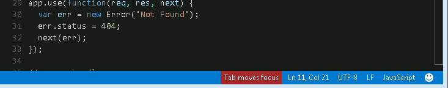
你还可以从 命令面板 (kb(workbench.action.showCommands)) 中使用 切换 Tab 键移动焦点 操作来打开和关闭 kbstyle(Tab) 键捕获。
只读文件永远不会捕获 kbstyle(Tab) 键。集成终端 面板遵循 kbstyle(Tab) 键捕获模式，可以通过 kb(editor.action.toggleTabFocusMode) 进行切换。
屏幕阅读器
VS Code 在编辑器中使用基于文本分页的策略来支持屏幕阅读器。以下屏幕阅读器已经过测试：
转到下一个/上一个错误或警告 操作（kb(editor.action.marker.nextInFiles) 和 kb(editor.action.marker.prevInFiles)）允许屏幕阅读器朗读错误和警告消息。
当建议弹出时，它们会向屏幕阅读器播报。使用 kbstyle(Ctrl+Up) 和 kbstyle(Ctrl+Down) 浏览建议，并使用 kbstyle(Shift+Escape) 关闭它们。如果建议妨碍到你，你可以使用 setting(editor.quickSuggestions) 设置将其关闭。
在差异视图窗格中，转到下一个/上一个差异 操作（kb(editor.action.accessibleDiffViewer.next) 和 kb(editor.action.accessibleDiffViewer.prev)）将显示无障碍差异查看器，以统一补丁格式呈现差异。使用 kbstyle(Up) 和 kbstyle(Down) 在未更改、插入或删除的行之间导航。按 kbstyle(Enter) 将焦点返回到差异编辑器的修改窗格，并定位到所选行号（如果选择了已删除的行，则定位到仍然存在的最接近的行号）。使用 kbstyle(Escape) 或 kbstyle(Shift+Escape) 关闭无障碍差异查看器。
屏幕阅读器模式
当 VS Code 检测到正在使用屏幕阅读器时，它会进入针对编辑器和集成终端等 UI 的优化屏幕阅读器模式。状态栏将在右下角显示 屏幕阅读器已优化。你可以通过单击显示文本或使用 切换屏幕阅读器无障碍模式 命令退出屏幕阅读器模式。
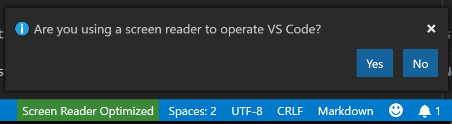
某些功能（例如折叠和迷你地图（代码概览））在屏幕阅读器模式下会被禁用。你可以使用 编辑器: 无障碍支持 设置 (setting(editor.accessibilitySupport)) 来控制 VS Code 是否使用屏幕阅读器模式，其值为 on、off 或默认的 auto（通过查询平台自动检测屏幕阅读器）。
通过键盘调整表格列大小
list.resizeColumn 命令使你可以通过键盘调整列的大小。你可以为此命令分配一个键盘快捷键。
触发此命令后，选择要调整大小的列，并提供你希望设置的宽度百分比。以下视频展示了如何在键盘快捷方式编辑器中应用此功能来调整列的大小。
无障碍视图
运行 打开无障碍视图 命令 kb(editor.action.accessibleView) 以显示无障碍视图，并逐个字符、逐行检查内容。无障碍视图目前适用于悬停信息、通知、注释、笔记本输出、终端输出、聊天响应、内联补全、调试控制台输出等。
输入控件和结果导航
在输入控件（例如搜索或筛选输入）与其结果之间导航在扩展视图、键盘快捷方式编辑器以及注释、问题和调试控制台面板中是一致的，使用 (kb(widgetNavigation.focusNext)) 和 (kb(widgetNavigation.focusPrevious))。
终端无障碍
你可以通过 kb(editor.action.accessibilityHelp) 显示终端无障碍帮助，其中描述了使用屏幕阅读器时的有用提示。一个提示是使用 kb(workbench.action.terminal.focusAccessibleBuffer) 来访问终端中的缓冲区。这将根据你的屏幕阅读器自动进入屏幕阅读器的浏览模式，以获取整个终端缓冲区的无障碍视图。
使用 setting(editor.tabFocusMode) 来控制终端是接收 kbstyle(Tab) 键还是工作台接收，与编辑器类似。
Shell 集成
终端有一项称为 Shell 集成 的功能，它启用了许多其他终端中没有的附加功能。在使用屏幕阅读器时，运行最近命令和转到最近目录功能特别有用。
另一个由 Shell 集成支持的命令 在无障碍视图中转到符号 (kb(editor.action.accessibleViewGoToSymbol))，允许你在终端命令之间导航，类似于编辑器中的 在编辑器中转到符号... 导航。
最低对比度比率
将 setting(terminal.integrated.minimumContrastRatio) 设置为 1 到 21 之间的数字，以调整文本颜色亮度，直到达到所需的对比度比率或达到纯白色 (#FFFFFF) 黑色 (#000000)。
请注意，setting(terminal.integrated.minimumContrastRatio) 设置不会应用于 powerline 字符。
状态栏无障碍
通过 聚焦下一个部分 (kb(workbench.action.focusNextPart)) 使焦点进入状态栏后，你可以使用箭头导航在状态栏条目之间移动焦点。
差异编辑器无障碍
差异编辑器中有一个无障碍差异查看器，以统一补丁格式呈现更改。你可以使用 转到下一个差异 (kb(editor.action.accessibleDiffViewer.next)) 和 转到上一个差异 (kb(editor.action.accessibleDiffViewer.prev)) 在更改之间导航。使用箭头键浏览行，按 kbstyle(Enter) 跳转回差异编辑器和所选行。
调试器无障碍
VS Code 调试器 UI 对用户是无障碍的，并具有以下功能：
- 调试状态更改会被朗读（例如，"已启动"、"断点命中"、"已终止"等）。
- 所有调试操作都可以通过键盘访问。
- 运行和调试视图以及调试控制台都支持 Tab 导航。
- 调试悬停信息可通过键盘访问 (
kb(editor.action.showHover))。 - 可以创建键盘快捷键来设置焦点到每个调试器区域。
- 在调试过程中，当焦点在编辑器中时，调用 调试: 添加到监视 命令会播报变量的值。
无障碍信号
无障碍信号指示当前行是否具有某些标记，例如：错误、警告、断点、折叠的文本区域或内联建议。
当主光标更改其行或首次向当前行添加标记时，会播放这些信号。当屏幕阅读器连接时，无障碍信号声音和播报可能会自动启用，并可以通过设置 accessibility.signals.* 进行控制。
帮助: 列出信号声音 命令列出所有可用的声音，让你在列表中移动时可以听到每个声音，并允许配置其启用/禁用状态。
Aria 播报还会通知屏幕阅读器和盲文用户已命中某些标记。帮助: 列出信号播报 命令通知用户哪些是可用的，并允许配置其启用/禁用状态。
悬停信息无障碍
某些悬停信息无法正常悬停，这使得它们难以与屏幕放大器配合使用。为了解决这个问题，在悬停信息处于活动状态时按住 kbstyle(Alt) 或 kbstyle(Option) 键将其"锁定"到位，这样在悬停时它就不会隐藏。释放该键以解锁悬停信息。
当前已知问题
VS Code 存在一些已知的无障碍问题，具体取决于平台。有关完整列表，请访问 VS Code 无障碍问题。
macOS
编辑器包含对 VoiceOver 的屏幕阅读器支持。
Linux
VS Code 与 Orca 屏幕阅读器配合良好。如果你的 Linux 发行版中的 Orca 不朗读编辑器内容：
- 确保在 VS Code 中设置了
"editor.accessibilitySupport": "on"。你可以使用设置来完成此操作，或者通过运行 显示无障碍帮助 命令并按kbstyle(Ctrl+E)来启用 accessibilitySupport。 - 如果 Orca 仍然没有声音，请尝试将
ACCESSIBILITY_ENABLED=1设置为环境变量。
启用该设置后，VS Code 应该可以与 Orca 屏幕阅读器配合使用。
后续步骤
继续阅读以了解：
- 语音交互 - 了解如何在 VS Code 中使用语音命令。
- Visual Studio Code 用户界面 - VS Code 快速导航。
- 基本编辑 - 了解强大的 VS Code 编辑器。
- 代码导航 - 快速浏览你的源代码。